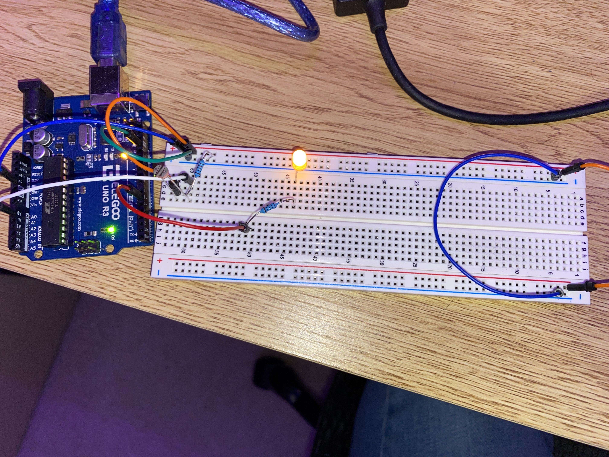
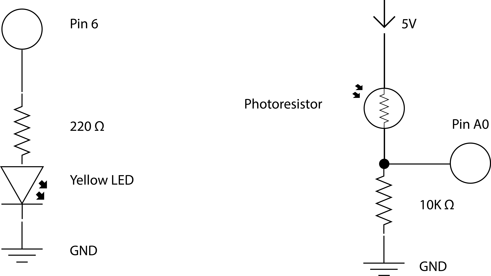
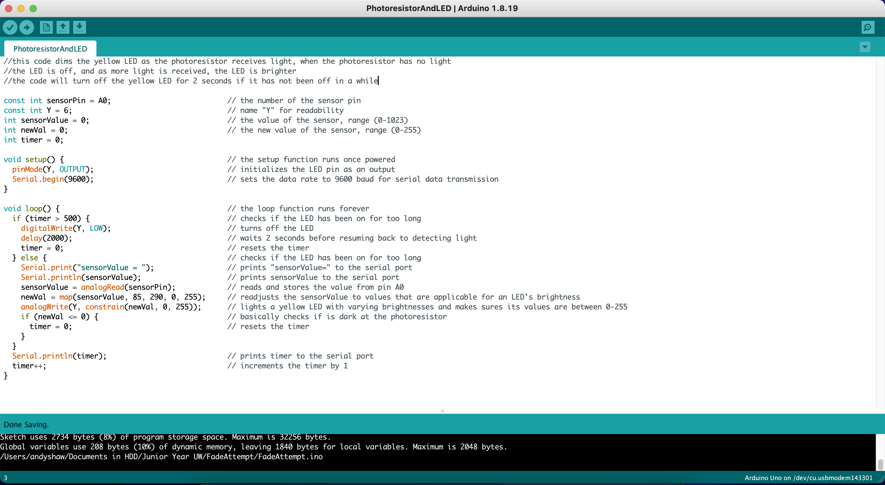

Here is an image of my circuit.

Here is an image of my circuit working. The LED fades depending on the input from the photoresistor. The LED will turn off for two seconds if it has been on for too long.

The yellow LED has a voltage drop of 1.8 v. I had to
choose resistors that provided the recommended 20 a. For the yellow LED's
resistor, I needed a (5 - 1.8) / .02 = 160 ohm resistor. The closest resistor
I had to this was 220 ohm (I went over to make sure I didn't short the LED).
I went with a 10k ohm resistor for my photoresistor as the voltage divider. This
allows for an accurate voltage drop across the photoresistor, which helps with
reading sensor values.

Here is my code with comments explaining how it works.